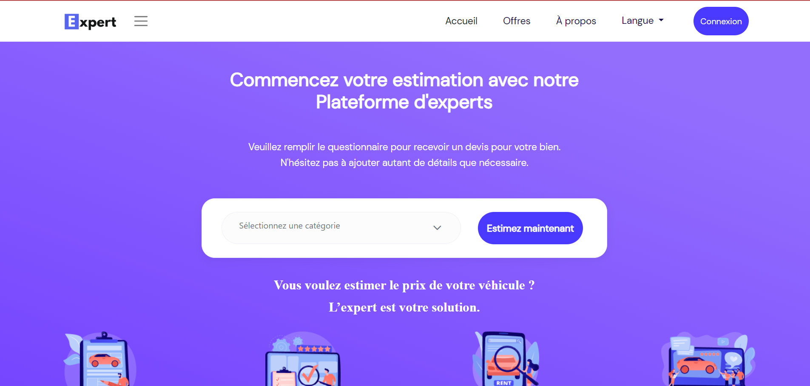
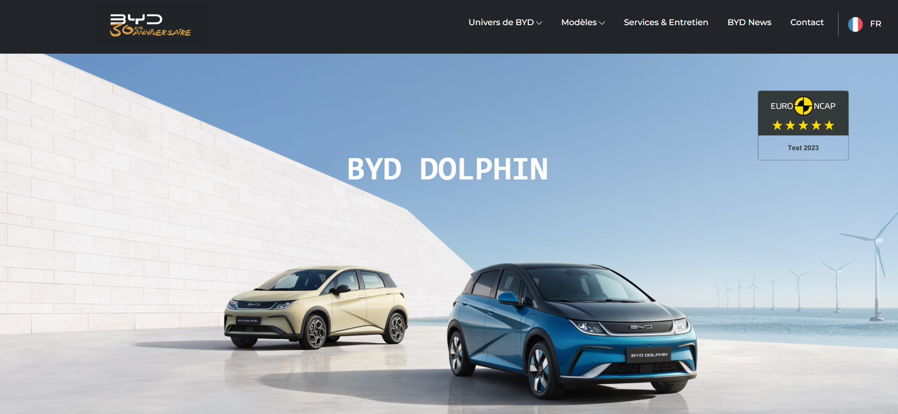

Expérience Professionnelle

L'Expert
Application de tarification des produits, couvrant les véhicules, l'immobilier et les produits technologiques.

AutoTeam (Toyota tunisie)
Développement d’une solution dédiée aux concessions automobiles pour la gestion des services de maintenance après-vente.

Application de recharge électrique (BYD)
Application mobile innovante permettant aux utilisateurs de localiser en temps réel des stations de recharge pour véhicules électriques, avec intégration de solutions de paiement sécurisées et gestion optimisée des données géospatiales.